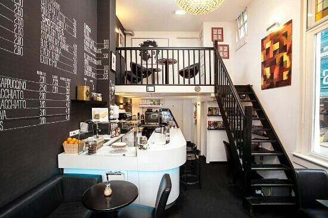
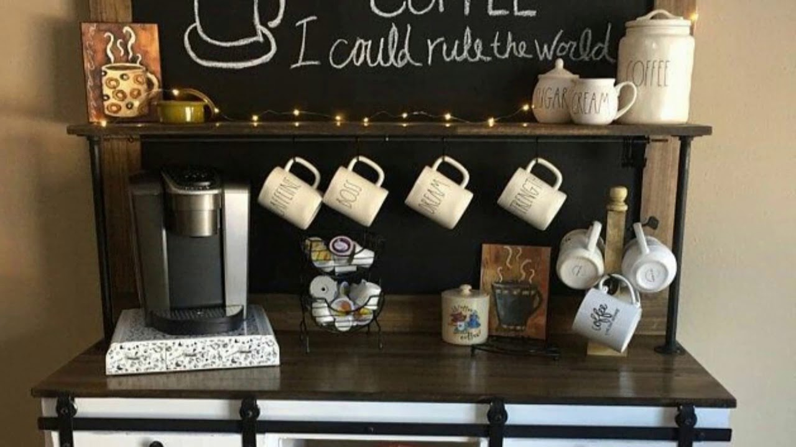
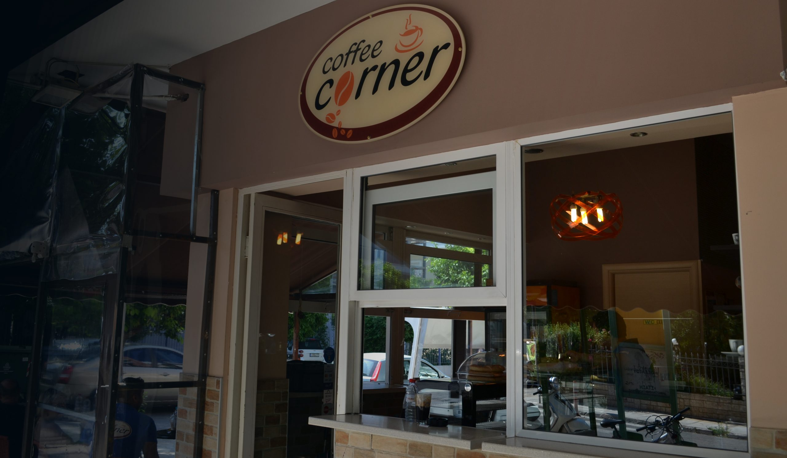
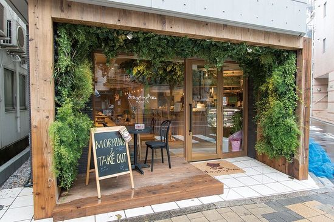

Our locations are easily found on the map




Come visit us in our four different areas located in Thessaloniki. They are displayed with purple mark on the left of this map.
Soon, we will be available in Athens and other parts of Greece. Help us and join in our road of offering people our top quality service
all around Greece!
On the right of the page, you can observe an image for every coffee shop of ours in different locations. Our environments are large enough, quiet and close to
green areas since we want our clients to fully relax while they enjoying their drink !